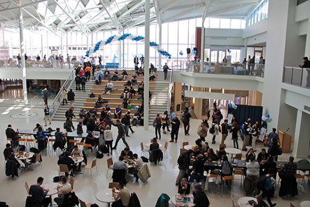

Welcome to the HUB-Robeson Center!
The HUB-Robeson Center, better known as the HUB, is a centerpiece on campus and is home to many dining facilities, the official bookstore, an art gallery, and more. Many students gather at the HUB to collaborate on group projects or advertise many of Penn State's clubs. Events are sometimes held at the HUB too for various occasions.
From their official website, "The HUB-Robeson Center encourages self-directed activities providing opportunities for individuals to recognize their own competencies, learn the dynamics of group activity, and understand their role as responsible citizens. The HUB-Robeson Center strives to provide an environment, which fosters respect, values all individuals, appreciates diversity and celebrates the contributions of all its members."
